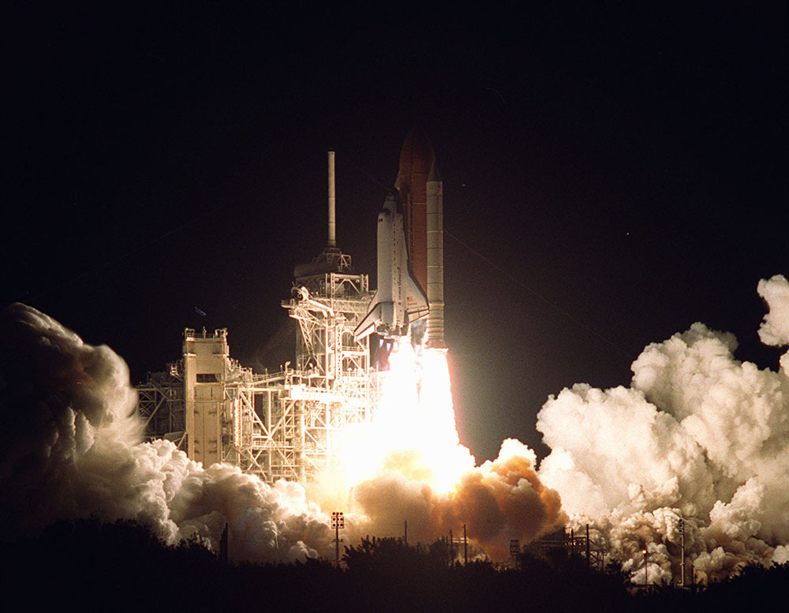
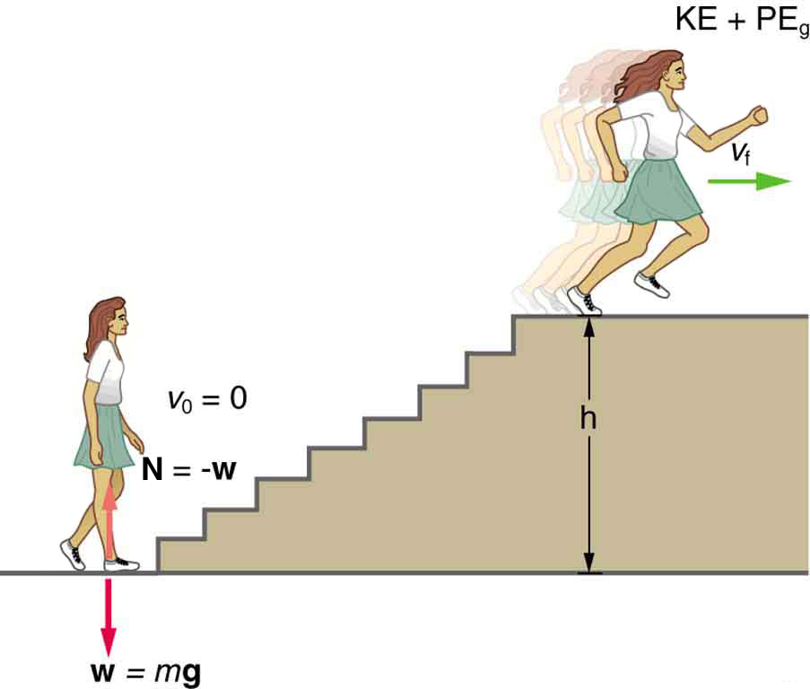
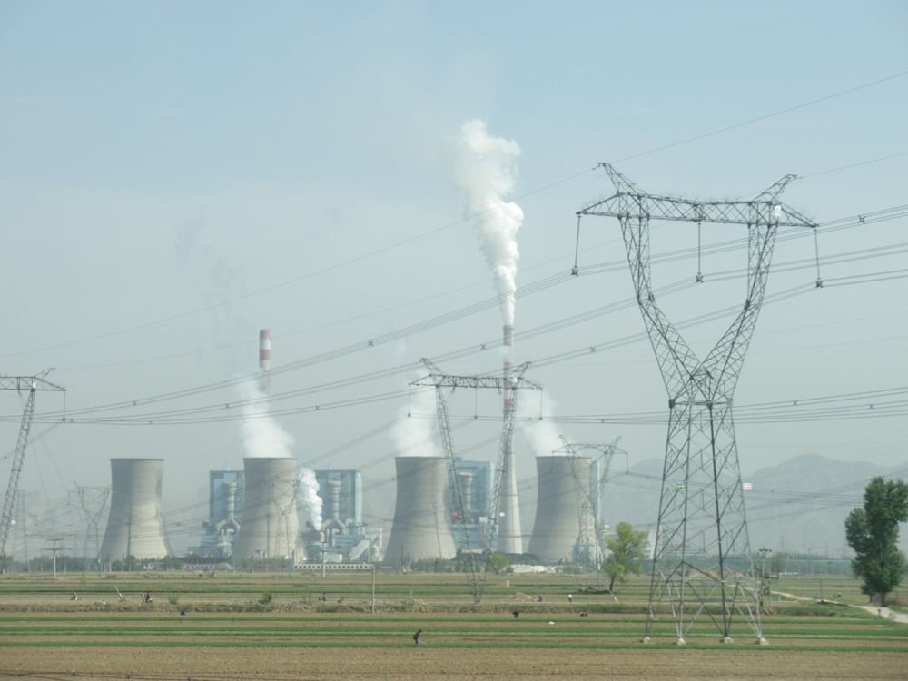

Calculate power by calculating changes in energy over time.
Examine power consumption and calculations of the cost of energy consumed.
What is Power?
Power—the word conjures up many images: a professional football player muscling aside his opponent, a dragster roaring away from the starting line, a volcano blowing its lava into the atmosphere, or a rocket blasting off, as in the figure.

This powerful rocket on the Space Shuttle Endeavor did work and consumed energy at a very high rate. (credit: NASA)
These images of power have in common the rapid performance of work, consistent with the scientific definition of power () as the rate at which work is done.
Power
Power is the rate at which work is done.
The SI unit for power is the watt (), where 1 watt equals 1 joule/second
Because work is energy transfer, power is also the rate at which energy is expended. A 60-W light bulb, for example, expends 60 J of energy per second. Great power means a large amount of work or energy developed in a short time. For example, when a powerful car accelerates rapidly, it does a large amount of work and consumes a large amount of fuel in a short time.
Calculating Power from Energy
Calculating the Power to Climb Stairs
What is the power output for a 60.0-kg woman who runs up a 3.00 m high flight of stairs in 3.50 s, starting from rest but having a final speed of 2.00 m/s? (See the figure.)

When this woman runs upstairs starting from rest, she converts the chemical energy originally from food into kinetic energy and gravitational potential energy. Her power output depends on how fast she does this.
Strategy and Concept
The work going into mechanical energy is . At the bottom of the stairs, we take both and
as initially zero; thus,
, where is the vertical height of the stairs. Because all terms are given, we can calculate and then divide it by time to get power.
Solution
Substituting the expression for into the definition of power given in the previous equation, yields
Entering known values yields
Discussion
The woman does 1764 J of work to move up the stairs compared with only 120 J to increase her kinetic energy; thus, most of her power output is required for climbing rather than accelerating.
It is impressive that this woman’s useful power output is slightly less than 1 horsepower ! People can generate more than a horsepower with their leg muscles for short periods of time by rapidly converting available blood sugar and oxygen into work output. (A horse can put out 1 hp for hours on end.) Once oxygen is depleted, power output decreases and the person begins to breathe rapidly to obtain oxygen to metabolize more food—this is known as the aerobic stage of exercise. If the woman climbed the stairs slowly, then her power output would be much less, although the amount of work done would be the same.
Making Connections: Take-Home Investigation—Measure Your Power Rating
Determine your own power rating by measuring the time it takes you to climb a flight of stairs. We will ignore the gain in kinetic energy, as the above example showed that it was a small portion of the energy gain. Don’t expect that your output will be more than about 0.5 hp.
Examples of Power
Examples of power are limited only by the imagination, because there are as many types as there are forms of work and energy. (See the table for some examples.) Sunlight reaching Earth’s surface carries a maximum power of about 1.3 kilowatts per square meter A tiny fraction of this is retained by Earth over the long term. Our consumption rate of fossil fuels is far greater than the rate at which they are stored, so it is inevitable that they will be depleted. Power implies that energy is transferred, perhaps changing form. It is never possible to change one form completely into another without losing some of it as thermal energy. For example, a 60-W incandescent bulb converts only 5 W of electrical power to light, with 55 W dissipating into thermal energy. Furthermore, the typical electric power plant converts only 35 to 40% of its fuel into electricity. The remainder becomes a huge amount of thermal energy that must be dispersed as heat transfer, as rapidly as it is created. A coal-fired power plant may produce 1000 megawatts; 1 megawatt (MW) is of electric power. But the power plant consumes chemical energy at a rate of about 2500 MW, creating heat transfer to the surroundings at a rate of 1500 MW. (See the figure.)

Tremendous amounts of electric power are generated by coal-fired power plants such as this one in China, but an even larger amount of power goes into heat transfer to the surroundings. The large cooling towers here are needed to transfer heat as rapidly as it is produced. The transfer of heat is not unique to coal plants but is an unavoidable consequence of generating electric power from any fuel—nuclear, coal, oil, natural gas, or the like. (credit: Kleinolive, Wikimedia Commons)
Power Output or Consumption
Object or Phenomenon
Power in Watts
Supernova (at peak)
Milky Way galaxy
Crab Nebula pulsar
The Sun
Volcanic eruption (maximum)
Lightning bolt
Nuclear power plant (total electric and heat transfer)
Aircraft carrier (total useful and heat transfer)
Dragster (total useful and heat transfer)
Car (total useful and heat transfer)
Football player (total useful and heat transfer)
Clothes dryer
Person at rest (all heat transfer)
Typical incandescent light bulb (total useful and heat transfer)
Heart, person at rest (total useful and heat transfer)
Electric clock
Pocket calculator
Power and Energy Consumption
We usually have to pay for the energy we use. It is interesting and easy to estimate the cost of energy for an electrical appliance if its power consumption rate and time used are known. The higher the power consumption rate and the longer the appliance is used, the greater the cost of that appliance. The power consumption rate is , where is the energy supplied by the electricity company. So the energy consumed over a time is
Electricity bills state the energy used in units of kilowatt-hours which is the product of power in kilowatts and time in hours. This unit is convenient because electrical power consumption at the kilowatt level for hours at a time is typical.
Calculating Energy Costs
What is the cost of running a 0.200-kW computer 6.00 h per day for 30.0 d if the cost of electricity is $0.120 per ?
Strategy
Cost is based on energy consumed; thus, we must find from and then calculate the cost. Because electrical energy is expressed in , at the start of a problem such as this it is convenient to convert the units into and hours.
Solution
The energy consumed in is
and the cost is simply given by
Discussion
The cost of using the computer in this example is neither exorbitant nor negligible. It is clear that the cost is a combination of power and time. When both are high, such as for an air conditioner in the summer, the cost is high.
The motivation to save energy has become more compelling with its ever-increasing price. Armed with the knowledge that energy consumed is the product of power and time, you can estimate costs for yourself and make the necessary value judgments about where to save energy. Either power or time must be reduced. It is most cost-effective to limit the use of high-power devices that normally operate for long periods of time, such as water heaters and air conditioners. This would not include relatively high power devices like toasters, because they are on only a few minutes per day. It would also not include electric clocks, in spite of their 24-hour-per-day usage, because they are very low power devices. It is sometimes possible to use devices that have greater efficiencies—that is, devices that consume less power to accomplish the same task. One example is the compact fluorescent light bulb, which produces over four times more light per watt of power consumed than its incandescent cousin.
Modern civilization depends on energy, but current levels of energy consumption and production are not sustainable. The likelihood of a link between global warming and fossil fuel use (with its concomitant production of carbon dioxide), has made reduction in energy use as well as a shift to non-fossil fuels of the utmost importance. Even though energy in an isolated system is a conserved quantity, the final result of most energy transformations is waste heat transfer to the environment, which is no longer useful for doing work. As we will discuss in more detail in Thermodynamics, the potential for energy to produce useful work has been “degraded” in the energy transformation.
Section Summary
Power is the rate at which work is done, or in equation form, for the average power for work done over a time , .
The SI unit for power is the watt (W), where .
The power of many devices such as electric motors is also often expressed in horsepower (hp), where .
Conceptual Questions
Most electrical appliances are rated in watts. Does this rating depend on how long the appliance is on? (When off, it is a zero-watt device.) Explain in terms of the definition of power.
Explain, in terms of the definition of power, why energy consumption is sometimes listed in kilowatt-hours rather than joules. What is the relationship between these two energy units?
A spark of static electricity, such as that you might receive from a doorknob on a cold dry day, may carry a few hundred watts of power. Explain why you are not injured by such a spark.
Problems & Exercises
The Crab Nebula (see the figure) pulsar is the remnant of a supernova that occurred in A.D. 1054. Using data from the table, calculate the approximate factor by which the power output of this astronomical object has declined since its explosion.
Crab Nebula (credit: ESO, via Wikimedia Commons)
Suppose a star 1000 times brighter than our Sun (that is, emitting 1000 times the power) suddenly goes supernova. Using data from the table: (a) By what factor does its power output increase? (b) How many times brighter than our entire Milky Way galaxy is the supernova? (c) Based on your answers, discuss whether it should be possible to observe supernovas in distant galaxies. Note that there are on the order of observable galaxies, the average brightness of which is somewhat less than our own galaxy.
A person in good physical condition can put out 100 W of useful power for several hours at a stretch, perhaps by pedaling a mechanism that drives an electric generator. Neglecting any problems of generator efficiency and practical considerations such as resting time: (a) How many people would it take to run a 4.00-kW electric clothes dryer? (b) How many people would it take to replace a large electric power plant that generates 800 MW?
(a) 40
(b) 8 million
What is the cost of operating a 3.00-W electric clock for a year if the cost of electricity is $0.0900 per ?
A large household air conditioner may consume 15.0 kW of power. What is the cost of operating this air conditioner 3.00 h per day for 30.0 d if the cost of electricity is $0.110 per ?
$149
(a) What is the average power consumption in watts of an appliance that uses of energy per day? (b) How many joules of energy does this appliance consume in a year?
(a) What is the average useful power output of a person who does of useful work in 8.00 h? (b) Working at this rate, how long will it take this person to lift 2000 kg of bricks 1.50 m to a platform? (Work done to lift his body can be omitted because it is not considered useful output here.)
(a)
(b) 141 s
A 500-kg dragster accelerates from rest to a final speed of 110 m/s in 400 m (about a quarter of a mile) and encounters an average frictional force of 1200 N. What is its average power output in watts and horsepower if this takes 7.30 s?
(a) How long will it take an 850-kg car with a useful power output of 40.0 hp (1 hp = 746 W) to reach a speed of 15.0 m/s, neglecting friction? (b) How long will this acceleration take if the car also climbs a 3.00-m-high hill in the process?
(a) 3.20 s
(b) 4.04 s
(a) Find the useful power output of an elevator motor that lifts a 2500-kg load a height of 35.0 m in 12.0 s, if it also increases the speed from rest to 4.00 m/s. Note that the total mass of the counterbalanced system is 10,000 kg—so that only 2500 kg is raised in height, but the full 10,000 kg is accelerated. (b) What does it cost, if electricity is $0.0900 per ?
(a) What is the available energy content, in joules, of a battery that operates a 2.00-W electric clock for 18 months? (b) How long can a battery that can supply run a pocket calculator that consumes energy at the rate of ?
(a)
(b)
(a) How long would it take a -kg airplane with engines that produce 100 MW of power to reach a speed of 250 m/s and an altitude of 12.0 km if air resistance were negligible? (b) If it actually takes 900 s, what is the power? (c) Given this power, what is the average force of air resistance if the airplane takes 1200 s? (Hint: You must find the distance the plane travels in 1200 s assuming constant acceleration.)
Calculate the power output needed for a 950-kg car to climb a slope at a constant 30.0 m/s while encountering wind resistance and friction totaling 600 N. Explicitly show how you follow the steps in the Problem-Solving Strategies for Energy.
Identify knowns: , ,
,
Identify unknowns: power of the car, force that car applies to road
Solve for unknown:
where is parallel to the incline and must oppose the resistive forces and the force of gravity:
Insert this into the expression for power and solve:
About 28 kW (or about 37 hp) is reasonable for a car to climb a gentle incline.
(a) Calculate the power per square meter reaching Earth’s upper atmosphere from the Sun. (Take the power output of the Sun to be (b) Part of this is absorbed and reflected by the atmosphere, so that a maximum of reaches Earth’s surface. Calculate the area in of solar energy collectors needed to replace an electric power plant that generates 750 MW if the collectors convert an average of 2.00% of the maximum power into electricity. (This small conversion efficiency is due to the devices themselves, and the fact that the sun is directly overhead only briefly.) With the same assumptions, what area would be needed to meet the United States’ energy needs Australia’s energy needs China’s energy needs (These energy consumption values are from 2006.)
Key terms
power the rate at which work is done
watt (W) SI unit of power, with
horsepower an older non-SI unit of power, with
kilowatt-hour unit used primarily for electrical energy provided by electric utility companies